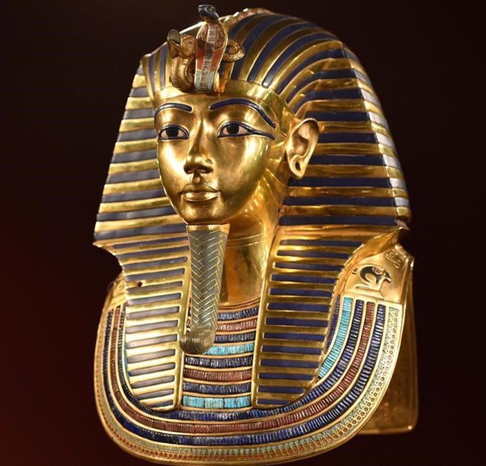

Omar Mehawed

Omar: A Programmer with Unlimited Ambition Omar is a passionate and ambitious young programmer who loves technology. He has a strong interest in software development and cybersecurity, always seeking new ways to enhance his skills and apply his knowledge. Not just a programmer, Omar explores various tech fields, from AI to IoT and 3D printing. He has participated in workshops and conferences and is working on innovative projects like smart glasses that display an AI assistant and a holographic smartwatch that offers a new interactive experience. Omar never settles—he is always eager to learn, experiment, and make an impact in the tech world. If you're looking for someone with vision and passion, Omar is the one who can turn ideas into successful projects.
Tutankhamun: The Boy King of Ancient Egypt
Tutankhamun, often called the "Boy King," was an Egyptian pharaoh of the 18th dynasty who ruled from around 1332 to 1323 BC. He ascended the throne at the young age of nine and reigned for about ten years before his untimely death at around 18. Despite his short reign, he remains one of the most famous pharaohs in history. His tomb, discovered by British archaeologist Howard Carter in 1922, was one of the greatest archaeological finds of all time. It was nearly intact, filled with priceless treasures, including his iconic golden death mask. The discovery provided invaluable insights into ancient Egyptian culture, burial practices, and art. Tutankhamun's reign was marked by efforts to restore traditional Egyptian religious practices after his predecessor, Akhenaten, had introduced a monotheistic worship of the sun god Aten. Although he did not achieve major military or political feats, his legacy endures due to the remarkable artifacts found in his tomb. Today, Tutankhamun remains a symbol of Egypt’s rich history, and his treasures continue to fascinate historians and visitors worldwide
Smart AI Technology: Transforming the Future
Smart AI technology is revolutionizing the way we interact with the world. Artificial Intelligence (AI) refers to machines that can simulate human intelligence, learning from data, recognizing patterns, and making decisions with minimal human intervention. Smart AI enhances this concept by integrating machine learning, natural language processing, and automation to create systems that continuously improve over time. Applications of Smart AI Smart AI is used in various fields, including: Healthcare: AI-powered systems assist in diagnosing diseases, predicting patient outcomes, and even performing robotic surgeries. Finance: AI helps detect fraudulent transactions, automate trading, and provide personalized financial advice. Smart Homes & IoT: AI-driven devices like voice assistants (Alexa, Google Assistant) and smart security systems make homes more efficient and secure. Autonomous Vehicles: Self-driving cars rely on AI to navigate roads, recognize traffic signals, and ensure passenger safety. Customer Service: AI chatbots and virtual assistants enhance customer interactions by providing instant support and recommendations. The Future of Smart AI AI is continuously evolving, with advancements in deep learning, robotics, and human-AI collaboration. Ethical concerns, such as data privacy and job displacement, must be addressed to ensure AI benefits society responsibly. As AI technology progresses, it will continue to shape industries, improve efficiency, and enhance human experiences in ways previously unimaginable.